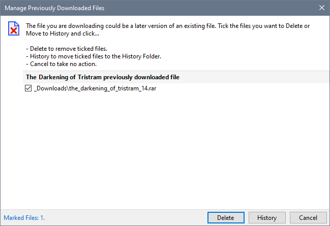
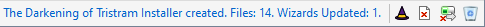
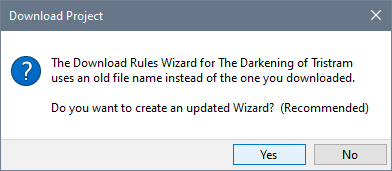
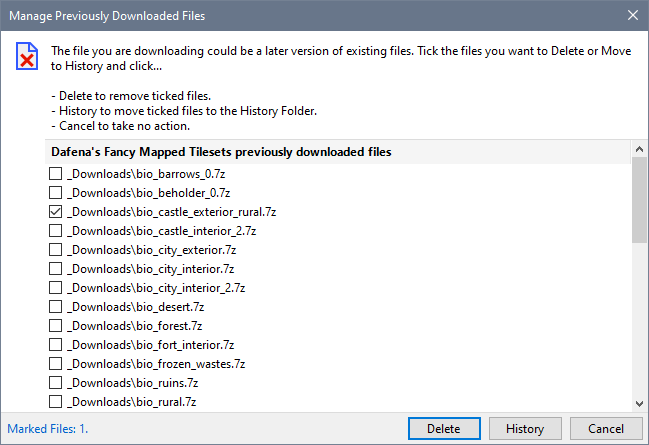

You can use Download Project to download and install updated files for Mods that you have already downloaded. You may wish to delete the previous version of the file or move it to the History folder before starting the download.
After the files have been successfully downloaded, you are asked to specify which files should be deleted or moved to the History folder. Select the files you want to process by placing a tick in the box next to each file in the list. Press Delete or History when you have made your selections, otherwise Cancel if you want to retain the old versions.

Installer Wizards that reference one or more of the files deleted or moved to the History folder are updated to reference the latest download.

If a Download Rules defined Installer Wizard needs to be updated, you are asked whether you want to create a local version of the Wizard.

Note
Usually NIT determines which files are being replaced by a later version and places a tick against these files. However, due to variations in file naming conventions used by Mod authors, the Tool may not be able to detect a file that is being replaced.
For this reason, NIT displays a list of almost all existing files so that you can manually select files that are being replaced by your download. You should take care not to inadvertently mark a file to delete or move to the History folder.
Although this example shows that NIT has determined which file has been updated, all the other files belonging to this project are shown.

Specify the Neverwinter Vault Project page
Review and customise download information
Update existing Mods